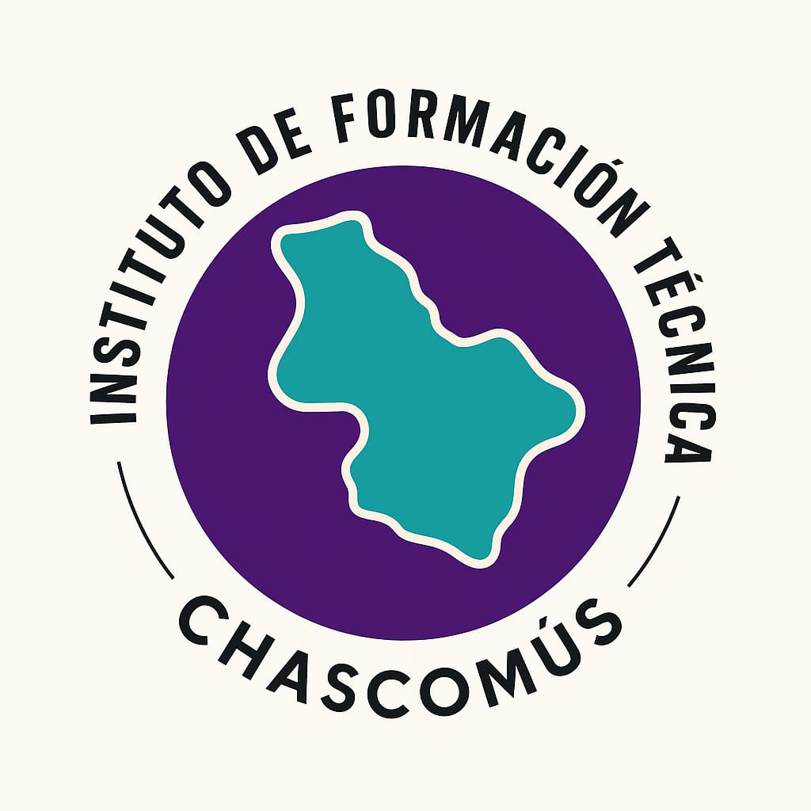

Tu futuro comienza aquí. Explora nuestra oferta académica, gestiona estudiantes y categorías de forma sencilla.
Registra, consulta y administra la información de nuestros alumnos.
Ir a EstudiantesEl Instituto Superior de Formación Docente y Técnica Chascomús se dedica a brindar educación de calidad, formando profesionales competentes y comprometidos con el desarrollo de la comunidad.